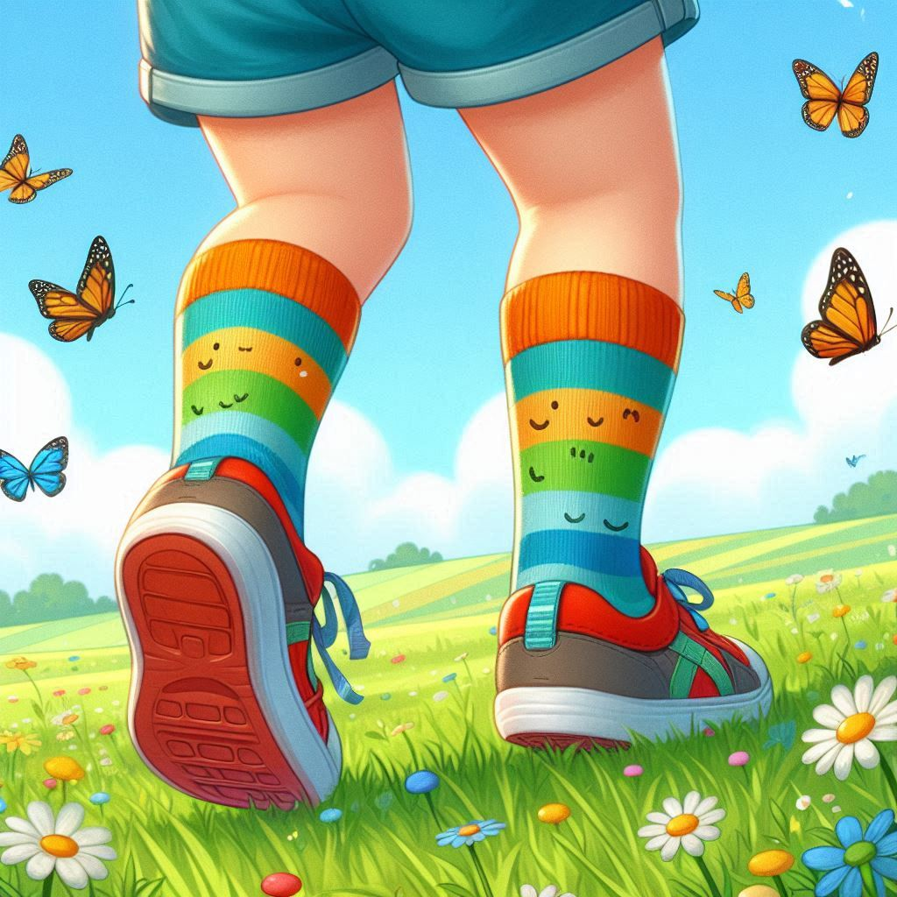

La Cabeza en francés se dice:

La Tête
Los Ojos en francés se dice:

Les Yeux
La Boca en francés se dice:

La Bouche
La Nariz en francés se dice:
Le Nez
El Brazo en francés se dice:
Le Bras
La Mano en francés se dice:
La Main
La Pierna en francés se dice:

La Jambe
El Pie en francés se dice:
Le Pied